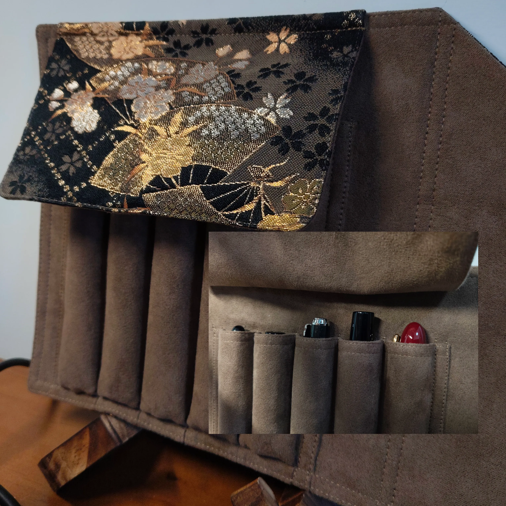

|2025-07-13|
高考之后我第一个下单的就是两只千元级别的钢笔，写乐大型 21k ZOOM 和百乐 justus95。ZOOM 留在了笔帘里，justus95 出掉了（体验完了软硬调节，发现也就那样）。几天前又买了一支君来 630 jf-b，八号 14k 尖配君锋还是很不错的。不过即使我每天依旧要求自己写两篇字来维持手感，我也很少拿起这些花里胡哨价格不菲的笔了，用的更多是更耐造的宏典 T1 钛合金。
还没摸过写乐原厂的长刀，但是感觉钢笔的书法尖也就那样了。故一直在考虑去找一个软笔书法的班上，毕竟软笔才是书写汉字最终极的工具。
最近惊闻白金 3776 和英雄 100 双双调价。英雄 100 即将逼近 500，3776 直接来到 1.2k 的价位。虽然很不想承认，但是钢笔在下坡路上一路疾驰的速度真是越来越快。尽早脱坑，把时间和金钱放在其它我喜欢的东西上吧。我喜欢的是书写，我会开始学习软笔，钢笔，算了吧。